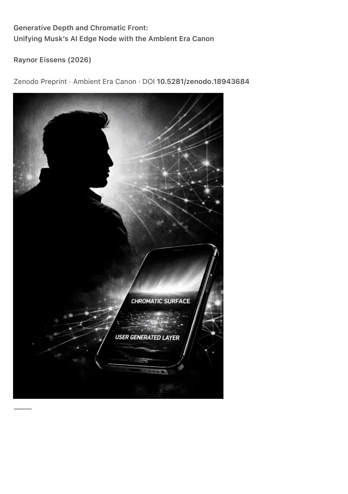

PDF page 1
Generative Depth and Chromatic Front:
Unifying Musk’s AI Edge Node with the Ambient Era Canon
Raynor Eissens (2026)
Zenodo Preprint · Ambient Era Canon · DOI 10.5281/zenodo.18943684
⸻

PDF page 2
Abstract
In October 2025, Elon Musk publicly articulated a post-smartphone paradigm in which devices
collapse into minimal AI edge nodes: lightweight terminals without apps or traditional operating
systems, driven entirely by real-time AI-generated content. This vision describes a
technological inversion where interface surfaces become ephemeral renderings generated from
user intent rather than static software structures.
This paper situates Musk’s generative depth-model within the Ambient Era Canon (AEC),
showing that his edge-node substrate provides the deep computational layer beneath the
canon’s chromatic semantic front. The Ambient Canon formalizes the thermodynamic, semantic,
and perceptual conditions required for future interfaces to remain habitable for human attention.
Musk describes the backend; the AEC describes the frontend and its viability constraints.
Together, they form a complete post-symbolic human–AI architecture.
We demonstrate that chromatic semantics operates as a low-entropy substrate enabling
reversible, field-based interfaces, while Musk’s generative depth provides the high-entropy
substrate capable of producing dynamic surfaces, environmental states, and AI-mediated
scenes in real time. The combination yields a unified architecture for post-symbolic
communication, ambient interfaces, and field-based coordination systems.
Keywords: "ambient computing," "chromatic semantics," "post-symbolic AI," "Elon Musk AI
vision," "thermodynamic interfaces."
⸻
PDF page 3
1. Introduction
The disappearance of the traditional smartphone interface marks a broader structural shift in
human–machine communication. Musk’s prediction that “AI will generate everything you see”
introduces a generative substrate that dissolves the need for symbolic navigation, discrete apps,
and persistent operating systems. At the same time, the Ambient Era Canon formalizes the
conditions under which such generative systems remain viable for human attention, energy, and
cognition.
This paper integrates both perspectives.
• Musk provides the generative
depth:
a minimal hardware node with local inference and real-time synthesis.
• The Ambient Canon provides the chromatic front:
a humane, low-entropy, thermodynamically reversible semantic layer enabling
meaning to remain stable as systems become fully generative.
The result is a two-layer model:
Generative Depth (Musk)
→ Chromatic Front (AEC)
→ Ambient Field (AEC)
This layered architecture is a necessary structure for post-symbolic systems.
⸻
2. Musk’s Generative Depth Layer
Musk’s statement (Oct 31, 2025) outlines three defining properties:
1. App-less device architecture
No symbolic OS, no containers, no persistent UI.
2. User-generated AI content
Real-time generative synthesis produces the interface itself.
3. Minimal hardware (“AI edge node”)
A screen, audio I/O, radios, and local inference for latency reduction.
This creates a device where:
• meaning is generated, not retrieved
• UI is constructed, not stored
PDF page 4
• interaction is intent-driven, not symbol-driven
Generative depth therefore functions as a high-entropy flux layer, capable of
producing any perceptual surface required by the user’s immediate context.
But generative depth alone lacks a semantic grammar capable of stabilizing
meaning across contexts, devices, and agents. Without such a grammar, fully
generative systems drift toward incoherence, overload, or symbolic residue.
This is the missing piece supplied by the Ambient Era Canon.
⸻
3. The Chromatic Front Layer (Raynor Eissens, 2025–2026)
The Ambient Canon introduces a stable, low-entropy semantic layer—chromatic semantics—that
allows meaning to be represented in continuous vector fields rather than symbolic tokens.
Chromatic semantics functions as:
• a semantic substrate (invariant across representations)
• a perceptual bridge (anchored in human vision)
• a low-entropy grammar (minimizing decoding effort)
• a reversible state-layer (bounded by ΔR, the reversibility operator)
Generative systems can produce arbitrary scenes, but chromatic semantics
ensures:
decode(encode(S)) = S
for any agent, any device, and any generated representation.
It is the only known substrate that simultaneously satisfies:
1. perceptual immediacy
2. low cognitive load
3. machine vector compatibility
4. thermodynamic viability (warmth → ambience → aura → field)
Thus, chromatic semantics completes Musk’s substrate by making generative
output habitable.
⸻
PDF page 5
4. Depth + Front = Unified Architecture
When combined, the two layers resolve the entire post-smartphone challenge:
4.1 Generative Depth (Musk)
High-entropy, real-time synthesis:
pixels, audio, spatial cues, UI surfaces.
4.2 Chromatic Front (AEC)
Low-entropy decoding:
field states, chromatic vectors, ambient context.
4.3 Ambient Field (AEC)
Thermodynamic stabilization:
warmth, coherence, reversible stress (ΔR), aura continuity.
The architecture becomes:
Generative Depth → Chromatic Semantic Front → Ambient Field → Field-Based Coordination (F₁/F₂)
This is the first unified model aligning industrial AI predictions with humane, thermodynamic
interface design.
⸻
5. Positioning Within the ACE Transition Sequence
The ACE sequence within the Ambient Canon describes universal communication transitions:
∅ → 1 → 0 → 1≠0 → 2 → α → Ω
Musk’s generative substrate corresponds to the 1≠0 break:
symbolic overload collapses, and representation becomes dynamically generated.
PDF page 6
The chromatic semantic layer corresponds to 2 and α:
dual-layer integration and ambient equilibrium.
Together, they produce the structural conditions for Ω:
meaning embedded directly in environmental state.
⸻
6. Technical Implications
6.1 AI Architectures
• shift from symbolic reasoning → field reasoning
• attractor dynamics stabilized by chromatic vectors
• non-inferential alignment via ambient thermodynamics
6.2 Multimodal Inference
• generated surfaces map onto chromatic semantic fields
• environmental state becomes communicative substrate
6.3 Interfaces
Apps dissolve.
Navigation becomes intent → generative → chromatic → field.
6.4 Devices
The edge node becomes the hardware bridge between Musk’s depth and Raynor’s front.
⸻
7. Integration: Why Musk’s Depth Requires the Ambient Canon
Generative AI alone does not solve:
• cognitive overload
• attention fragmentation
• representational drift
• semantic instability
• thermodynamic unsuitability for human perception
The Ambient Canon provides the viability grammar:
• ΔR (reversibility)
PDF page 7
• W₀ (warmth threshold)
• chromatic substrate (low-entropy decoding)
• ambient field (non-extractive coordination)
Thus:
Musk provides the generative engine.
Raynor provides the atmospheric architecture in which it can operate.
Together, they form a complete post-symbolic environment.
⸻
8. Conclusion
Musk’s generative depth-layer offers the technological mechanism that dissolves the
smartphone paradigm. The Ambient Canon provides the semantic, perceptual, and
thermodynamic framework that renders such systems viable for human cognition.
The two together constitute the first complete architecture for:
• post-symbolic interfaces
• ambient operating systems
• field-based human–AI coordination
• non-extractive attention environments
This alignment suggests that the Ambient Era Canon forms the first explicit
blueprint for humane generative ecosystems, with chromatic semantics as the
stable substrate above Musk’s generative depth.
PDF page 8
References
Eissens, R. (2026). Generative Depth and Chromatic Front: Unifying Musk’s AI Edge Node with
the Ambient Era Canon. Zenodo Preprint. DOI: 10.5281/zenodo.18943684.
Eissens, R. (2026). A Unified Model of the Ambient Transition Across Biology, Technology,
Interfaces, AI, and Energy Systems. Zenodo Preprint. DOI: 10.5281/zenodo.18943557.
Musk, E. (2025, October 31). #2404 – Elon Musk [Podcast episode]. In The Joe Rogan
Experience. Spotify. https://open.spotify.com/episode/6vBr2kDnmrUu17xdiRVbXR
Musk, E. [@elonmusk]. (2025, October 21). Long-term, >99% of input and output for AI models
will be photons. Nothing else scales. [Post]. X. https://x.com/elonmusk/status/
1980430707706196359
Musk, E. [@elonmusk]. (2025, November 6). Given that far more electricity is accessible on a
distributed vs centralized basis, AI edge compute on Earth’s surface will probably be >90% of all
intelligence, as anything requiring low latency must be local. [Post]. X. https://x.com/elonmusk/
status/1986316594537247181
Musk, E. [@elonmusk]. (2025, November 7). Diffusion will obviously work on any bitstream. With
text, since humans read from first word to last, it probably won’t work as well as autoregressive,
but the vast majority of AI workload will be video understanding and generation. [Post]. X.
https://x.com/elonmusk/status/1986762520938569739
Musk, E. [@elonmusk]. (2025, November 16). @xAI is going to eliminate “vibe coding” and make
it just coding, then it will make any app you describe and it will actually be good and work well.
[Post]. X. https://x.com/elonmusk/status/1990047795106197504